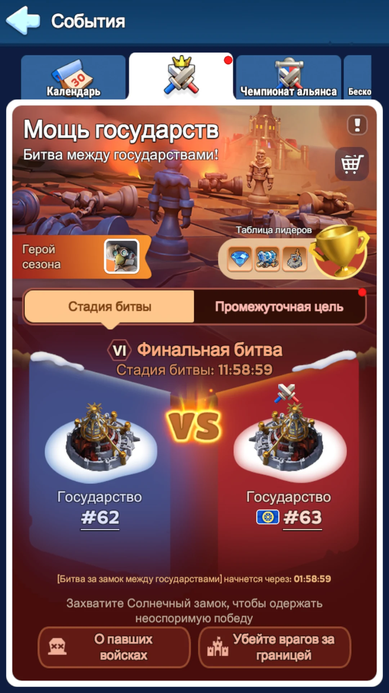
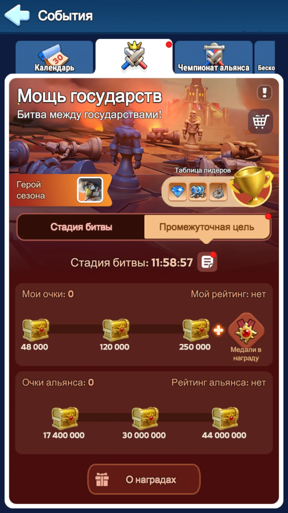
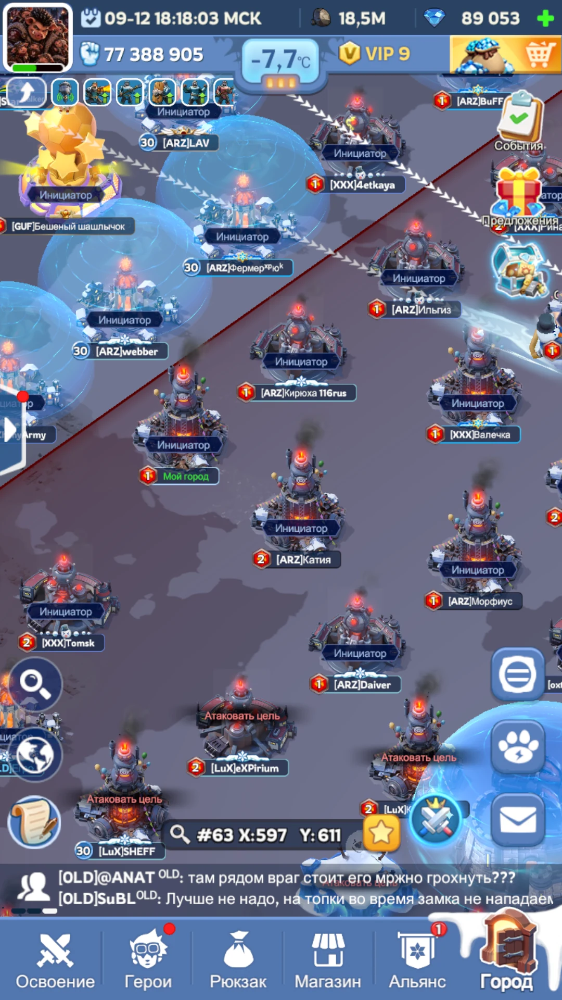
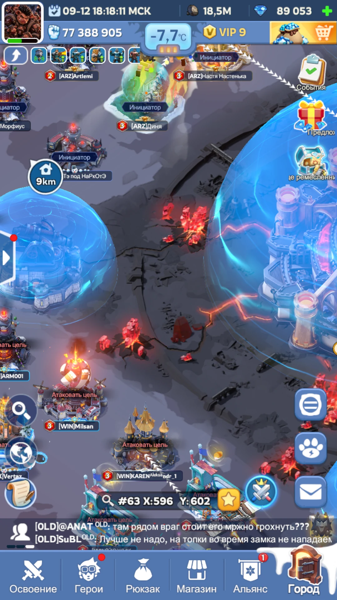
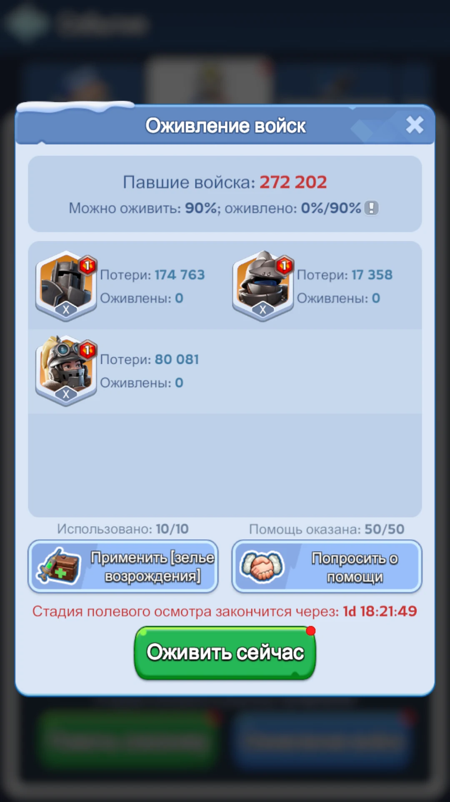
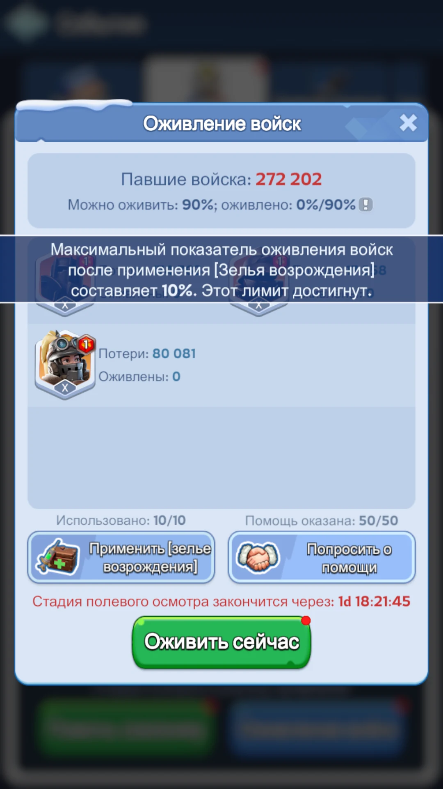
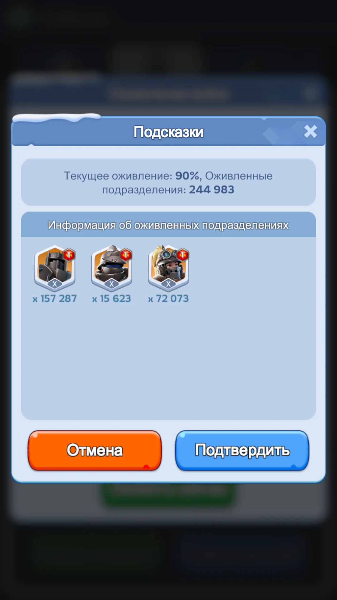

Не прожигаем редкие материалы и большие ускорения, если улучшение спокойно ждёт нужного дня Подготовки.
Каждый день засчитывает свой набор действий. Для обычного игрока главная цель — закрыть личные сундуки, а не рейтинг.
Сначала открывается межсерверный переход, затем начинается бой за Солнечный замок. Город остаётся уязвим до конца боевой фазы.
Погибшие в боевой фазе войска частично возвращаются через Полевой лазарет и помощь союзников.
1. Что такое СвС
СвС («Мощь государств») — цикл, в котором два государства сначала соревнуются очками Подготовки, а затем переходят к межсерверной боевой фазе. Победитель Подготовки получает стратегическое преимущество: бой за Солнечный замок проходит в государстве, проигравшем Подготовку, а замок победителя Подготовки остаётся защищён.
Для обычного игрока основная ценность СвС — возможность превратить заранее накопленные ресурсы в двойную выгоду: усилить аккаунт и одновременно забрать шкалы, Солнечные жетоны, Медали государства и рейтинговые награды.
- Главный принцип подготовки: не тратить дефицитные ресурсы между событиями, если тот же апгрейд можно сделать в нужный день СвС и получить за него дополнительные награды.
- Победа подготовки важна всему государству: она определяет, на чьей территории проходит межсерверная битва за Замок, и влияет на итоговые бонусы.
- Личная базовая цель на первом СвС — закрывать третью личную шкалу каждого дня. Лезть в рейтинг не обязательно.
2. Как проходит цикл СвС
Подбор соперника
Игра подбирает другое государство сопоставимого прогресса. Сначала виден таймер подбора, затем — конкретный соперник.
Подготовка
Пять дней набора очков. Пятый день завершается в субботу в 17:00 МСК; до этого момента продолжается Подготовка. Тратим накопленное в тот день, когда оно даёт очки.
Боевая стадия
С 17:00 МСК открыт межсерверный бой. В 19:00 начинается Солнечный замок: до 5 часов, либо до 2,5 часов непрерывного контроля одним государством. Межсерверное PvP продолжается до 05:00 МСК воскресенья.
Восстановление
После 05:00 МСК воскресенья начинается Полевой лазарет: часть погибших войск можно вернуть, а союзники помогают повышать процент восстановления.
3. Подготовка: как тратить запасы
Подготовка — это не отдельная прокачка, а правильный момент для уже запланированного развития аккаунта. Сначала выбираем улучшения, которые всё равно нужны, затем переносим их на день, где они дают очки СвС.
- Все дробные ресурсы округлены вверх: таблица показывает минимум, достаточный для достижения указанной доли.
- Для Мифрила и других очень дорогих действий одна единица может сильно «перелетать» 10% или 25% — это нормально.
- Ускорения считаются в реальных минутах ускорения; ускорение за самоцветы в зачёт не идёт.
Главная выгода СвС — потратить заранее накопленные ресурсы в правильный день и получить за обычное развитие дополнительную награду.
Сначала оцениваем запас ресурсов и конкуренцию. Не стоит сжигать универсальные фрагменты, виджеты или редкие материалы только ради красивого места.
ДЕНЬ IСТРОИТЕЛЬСТВО ГОРОДА
День I — точные очки и наградыТаблица очков на ресурс, расчёты 10/25/50/100%, личные награды и альянсовые пороги.
| Ресурс | Очки / ед. | 10% | 25% | 50% | 100% |
|---|---|---|---|---|---|
| Показатель талисманов губернатора | 70 оч. | 286 | 715 | 1 429 | 2 858 |
| Кристалл огня | 2 000 оч.(1,0% шкалы) | 10 | 25 | 50 | 100 |
| Ускорения строительства / исследования / тренировки | 30 оч. | 667 мин.≈ 11 ч 07 мин. | 1 667 мин.≈ 27 ч 47 мин. | 3 334 мин.≈ 55 ч 34 мин. | 6 667 мин.≈ 111 ч 07 мин. |
Личные награды дня
| Порог | Награда |
|---|---|
| 30 000 | 2 Солнечных жетона; 30×5 мин. тренировки; 200 сундуков защищённых ресурсов |
| 100 000 | 5 Солнечных жетонов; 3 000 самоцветов; 30×5 мин. строительства; 700 сундуков |
| 200 000 | 10 Солнечных жетонов; 10 Кристаллов огня; 30×5 мин. исследования; 1 Жетон выстрела; +1 Медаль государства |
Альянсовые пороги: 145 000 → 996 000 → 3 500 000
ДЕНЬ IIБАЗОВЫЕ НАВЫКИ
День II — точные очки и наградыТаблица очков на ресурс, расчёты 10/25/50/100%, личные награды и альянсовые пороги.
| Ресурс | Очки / ед. | 10% | 25% | 50% | 100% |
|---|---|---|---|---|---|
| Кристалл огня | 2 000 оч. | 14 | 34 | 68 | 135 |
| Ускорения строительства / исследования / тренировки | 30 оч. | 900 мин.≈ 15 ч 00 мин. | 2 250 мин.≈ 37 ч 30 мин. | 4 500 мин.≈ 75 ч 00 мин. | 9 000 мин.≈ 150 ч 00 мин. |
| Вращение Колеса Фортуны | 8 000 оч.(3,0% шкалы) | 4 | 9 | 17 | 34 |
| Редкий фрагмент героя | 350 оч. | 78 | 193 | 386 | 772 |
| Эпический фрагмент героя | 1 220 оч. | 23 | 56 | 111 | 222 |
| Мифический фрагмент героя | 3 040 оч.(1,1% шкалы) | 9 | 23 | 45 | 89 |
| Сбор мяса | 2 оч. | 13,5 млн | 33,75 млн | 67,5 млн | 135 млн |
| Сбор дерева | 2 оч. | 13,5 млн | 33,75 млн | 67,5 млн | 135 млн |
| Сбор угля | 2 оч. | 2,7 млн | 6,75 млн | 13,5 млн | 27 млн |
| Сбор железа | 2 оч. | 675 тыс. | 1,69 млн | 3,38 млн | 6,75 млн |
Личные награды дня
| Порог | Награда |
|---|---|
| 40 000 | 2 Солнечных жетона; 30×5 мин. тренировки; 200 сундуков защищённых ресурсов |
| 120 000 | 5 Солнечных жетонов; 3 000 самоцветов; 30×5 мин. строительства; 700 сундуков |
| 270 000 | 10 Солнечных жетонов; 5 фишек Колеса Фортуны; 30×5 мин. исследования; 1 Жетон выстрела; +1 Медаль государства |
Альянсовые пороги: 145 000 → 996 000 → 3 500 000
ДЕНЬ IIIОХОТА НА ЗВЕРЕЙ
День III — точные очки и наградыТаблица очков на ресурс, расчёты 10/25/50/100%, личные награды и альянсовые пороги.
| Ресурс | Очки / ед. | 10% | 25% | 50% | 100% |
|---|---|---|---|---|---|
| Очко развития питомца | 50 оч. | 600 | 1 500 | 3 000 | 6 000 |
| Продвинутая дикая метка | 15 000 оч.(5,0% шкалы) | 2 | 5 | 10 | 20 |
| Обычная дикая метка | 1 150 оч. | 27 | 66 | 131 | 261 |
| Показатель талисманов губернатора | 70 оч. | 429 | 1 072 | 2 143 | 4 286 |
| Вращение Колеса Фортуны | 8 000 оч.(2,7% шкалы) | 4 | 10 | 19 | 38 |
| Редкий фрагмент героя | 350 оч. | 86 | 215 | 429 | 858 |
| Эпический фрагмент героя | 1 220 оч. | 25 | 62 | 123 | 246 |
| Мифический фрагмент героя | 3 040 оч.(1,0% шкалы) | 10 | 25 | 50 | 99 |
| Созвать ралли и убить Полярный ужас | 30 000 оч.(10,0% шкалы) | 1 | 3 | 5 | 10 |
| Зверь ур. 1–10 | 9 000 оч.(3,0% шкалы) | 4 | 9 | 17 | 34 |
| Зверь ур. 11–15 | 9 750 оч.(3,2% шкалы) | 4 | 8 | 16 | 31 |
| Зверь ур. 16–20 | 10 500 оч.(3,5% шкалы) | 3 | 8 | 15 | 29 |
| Зверь ур. 21–25 | 11 250 оч.(3,8% шкалы) | 3 | 7 | 14 | 27 |
| Зверь ур. 26–30 | 12 000 оч.(4,0% шкалы) | 3 | 7 | 13 | 25 |
Личные награды дня
| Порог | Награда |
|---|---|
| 80 000 | 2 Солнечных жетона; 30×5 мин. тренировки; 200 сундуков защищённых ресурсов |
| 150 000 | 5 Солнечных жетонов; 3 000 самоцветов; 30×5 мин. строительства; 700 сундуков |
| 300 000 | 10 Солнечных жетонов; 15 Чертежей талисмана; 30×5 мин. исследования; 1 Жетон выстрела; +1 Медаль государства |
Альянсовые пороги: 369 000 → 1 850 000 → 5 550 000
ДЕНЬ IVРАЗВИТИЕ ГЕРОЕВ И ВОЙСК
День IV — точные очки и наградыТаблица очков на ресурс, расчёты 10/25/50/100%, личные награды и альянсовые пороги.
| Ресурс | Очки / ед. | 10% | 25% | 50% | 100% |
|---|---|---|---|---|---|
| Показатель талисманов губернатора | 70 оч. | 429 | 1 072 | 2 143 | 4 286 |
| Камень эссенции | 4 000 оч.(1,3% шкалы) | 8 | 19 | 38 | 75 |
| Виджет эксклюзивного снаряжения | 8 000 оч.(2,7% шкалы) | 4 | 10 | 19 | 38 |
| Мифрил | 144 000* оч.(48,0% шкалы) | 1 | 1 | 2 | 3 |
| Новый боец T7 | 25 оч. | 1 200 | 3 000 | 6 000 | 12 000 |
| Новый боец T8 | 35 оч. | 858 | 2 143 | 4 286 | 8 572 |
| Новый боец T9 | 45 оч. | 667 | 1 667 | 3 334 | 6 667 |
| Новый боец T10 | 60 оч. | 500 | 1 250 | 2 500 | 5 000 |
| Повышение T8 → T9 | 10 оч. | 3 000 | 7 500 | 15 000 | 30 000 |
| Повышение T9 → T10 | 15 оч. | 2 000 | 5 000 | 10 000 | 20 000 |
| Повышение T8 → T10 | 25 оч. | 1 200 | 3 000 | 6 000 | 12 000 |
Личные награды дня
| Порог | Награда |
|---|---|
| 80 000 | 2 Солнечных жетона; 30×5 мин. тренировки; 200 сундуков защищённых ресурсов |
| 150 000 | 5 Солнечных жетонов; 3 000 самоцветов; 30×5 мин. строительства; 700 сундуков |
| 300 000 | 10 Солнечных жетонов; 12 Камней эссенции; 30×5 мин. исследования; 1 Жетон выстрела; +1 Медаль государства |
Альянсовые пороги: 498 000 → 2 190 000 → 4 850 000
ДЕНЬ VУСИЛЕНИЕ МОЩИ
День V — точные очки и наградыТаблица очков на ресурс, расчёты 10/25/50/100%, личные награды и альянсовые пороги.
| Ресурс | Очки / ед. | 10% | 25% | 50% | 100% |
|---|---|---|---|---|---|
| Очко развития питомца | 50 оч. | 500 | 1 250 | 2 500 | 5 000 |
| Продвинутая дикая метка | 15 000 оч.(6,0% шкалы) | 2 | 5 | 9 | 17 |
| Обычная дикая метка | 1 150 оч. | 22 | 55 | 109 | 218 |
| Мифрил | 144 000* оч.(57,6% шкалы) | 1 | 1 | 1 | 2 |
| Показатель снаряжения губернатора | 36 оч. | 695 | 1 737 | 3 473 | 6 945 |
| Камень эссенции | 4 000 оч.(1,6% шкалы) | 7 | 16 | 32 | 63 |
| Виджет эксклюзивного снаряжения | 8 000 оч.(3,2% шкалы) | 4 | 8 | 16 | 32 |
| Кристалл огня | 2 000 оч. | 13 | 32 | 63 | 125 |
| Ускорения строительства / исследования / тренировки | 30 оч. | 834 мин.≈ 13 ч 54 мин. | 2 084 мин.≈ 34 ч 44 мин. | 4 167 мин.≈ 69 ч 27 мин. | 8 334 мин.≈ 138 ч 54 мин. |
Личные награды дня
| Порог | Награда |
|---|---|
| 40 000 | 2 Солнечных жетона; 30×5 мин. тренировки; 200 сундуков защищённых ресурсов |
| 130 000 | 5 Солнечных жетонов; 3 000 самоцветов; 30×5 мин. строительства; 700 сундуков |
| 250 000 | 10 Солнечных жетонов; 20 Проектных планов; 30×5 мин. исследования; 1 Жетон выстрела; +1 Медаль государства |
Альянсовые пороги: 145 000 → 996 000 → 3 500 000
4. Боевая фаза — что происходит в субботу
Боевая фаза в нашем расписании идёт с 17:00 субботы до 05:00 воскресенья по МСК. Это не только бой за Замок: до него и после него игроки обоих государств могут переходить между серверами, атаковать города и набирать боевые очки.


Пятый день Подготовки завершён. Можно перейти в государство соперника и начинать PvP. Если вы не участвуете — щит лучше поставить заранее.
Замок и башни становятся главной целью государства. Победитель Подготовки атакует замок проигравшего.
Досрочная победа — 2,5 часа непрерывного контроля Замка одним государством. Иначе решает суммарное время удержания к концу пятичасового окна.
Даже после решения судьбы Замка межсерверное PvP продолжается до утра воскресенья. После выхода из боя снова закрывайте город щитом.
Не телепортируйтесь в центр без команды. Работайте по указаниям R4/R5: гарнизон, ралли, башни, пополнение или безопасное получение личной шкалы.
Щит — самый простой вариант. Атака или вступление в атакующее ралли снимают щит и дают период, когда его нельзя включить снова; отправлять подкрепления под щитом можно.
За уничтоженные и потерянные войска государства-соперника и за удержание Замка/башен. Для боевых очков по городам действует ограничение по разнице уровней Топки примерно ±3; в ралли учитывается уровень лидера.
Здания альянса соперника — HQ и знамёна — не являются целями межсерверного боя. Основные цели: города, Солнечный замок и башни.


Очки и награды боевой стадииТочные очки за T7–T10, эквивалент шкалы, личные сундуки и альянсовые пороги.
| Действие | Очки |
|---|---|
| Удерживать 1 000 боевой мощи в Замке/башне 60 сек. | 1 |
| Уничтожить или потерять 1 бойца T7 | 7 |
| Уничтожить или потерять 1 бойца T8 | 9 |
| Уничтожить или потерять 1 бойца T9 | 11 |
| Уничтожить или потерять 1 бойца T10 | 13 |
Эквивалент боевой шкалы
| Источник | Очки / ед. | 10% | 25% | 50% | 100% |
|---|---|---|---|---|---|
| T7 — уничтожено/потеряно | 7 оч. | 3 572 | 8 929 | 17 858 | 35 715 |
| T8 — уничтожено/потеряно | 9 оч. | 2 778 | 6 945 | 13 889 | 27 778 |
| T9 — уничтожено/потеряно | 11 оч. | 2 273 | 5 682 | 11 364 | 22 728 |
| T10 — уничтожено/потеряно | 13 оч. | 1 924 | 4 808 | 9 616 | 19 231 |
Личные сундуки боевой стадии
| Порог | Награда |
|---|---|
| 48 000 | 5 Солнечных жетонов; 30×5 мин. тренировки; 200 сундуков защищённых ресурсов |
| 120 000 | 10 Солнечных жетонов; 4 000 самоцветов; 30×5 мин. строительства; 700 сундуков |
| 250 000 | 20 Солнечных жетонов; 13* Кристаллов огня; 30×5 мин. исследования; 2 Жетона выстрела; +1 Медаль государства |
Альянсовые боевые пороги: 17 400 000 → 30 000 000 → 44 000 000 очков.
5. Восстановление войск после боя

С 05:00 МСК воскресенья и до конца понедельника. На время фазы действует государственный бонус к скорости лечения.
Восстанавливается часть войск, погибших именно в боях СвС. Войска, уже находящиеся в Военном бюро/Enlistment Office, в этот расчёт не входят.
Стартовый процент восстановления — 30%. Его можно поднять до 90% с помощью предметов восстановления и помощи союзников.
Не спешите просить помощь, если потери маленькие. Сначала союзные книги восстановления выгоднее отдать игрокам с действительно большими потерями.


Как считается восстановлениеПроценты Полевого лазарета и помощь союзников.
- Базовый процент возврата погибших войск — 30%.
- Предметы восстановления за самоцветы могут добавить до 10 процентных пунктов.
- Помощь союзников книгами восстановления может добавить ещё до 50 процентных пунктов.
- Итоговый максимум восстановления — 90%.
- На время Полевого лазарета действует государственный бонус +20% к скорости лечения обычных раненых.
6. Медали, рейтинги и жетоны
Одна медаль выдаётся после получения всех трёх личных сундуков конкретной стадии. За подготовку можно получить 5 медалей, за боевую стадию — шестую. Награды открываются начиная с 2 медалей.
Награды за 2–6 Медалей государстваТочная лестница наград по количеству собранных медалей.
| Медалей | Награда |
|---|---|
| 2 | 500 самоцветов; 2 универсальных мифических фрагмента; 5 Кристаллов огня; 2×1 ч тренировки |
| 3 | Контракт на стройку обычных объектов ×1; 500 самоцветов; 2 миф. фрагмента; 5 КО; 2×1 ч тренировки |
| 4 | Контракт на стройку обычных объектов ×1; 500 самоцветов; 2 миф. фрагмента; 5 КО; 2×1 ч тренировки |
| 5 | Контракт на стройку обычных объектов ×1; 500 самоцветов; 2 миф. фрагмента; 5 КО; 2×1 ч тренировки |
| 6 | Контракт на стройку обычных объектов ×2; 500 самоцветов; 2 миф. фрагмента; 5 КО; 2×1 ч тренировки |
Личные и альянсовые шкалы дают гарантированные награды. Рейтинги сверху — дополнительная гонка между игроками и альянсами двух государств. Если вы не идёте за конкретным местом, не сжигайте дефицитные ресурсы ради нескольких позиций.
Общий личный рейтинг ПодготовкиПодробная таблица наград и порогов.
ОБЩИЙ ЛИЧНЫЙ РЕЙТИНГ ПОДГОТОВКИ
Это награда уже не за «закрыть шкалу», а за сумму очков всех пяти дней относительно других игроков обоих государств. Первые 150 мест получают дополнительные сундуки/предметы; Top-10 — ещё и «Меч завоеваний», здание для Острова, усиливающее атаку всех войск.
| Место | Меч завоеваний | Сундук «Филли» | Самоцветы | Стройка 1 ч | Тренир. 1 ч |
|---|---|---|---|---|---|
| 1 | 5 | 400 | 100 000 | 40 | 40 |
| 2 | 4 | 300 | 80 000 | 32 | 32 |
| 3 | 3 | 200 | 65 000 | 28 | 28 |
| 4–5 | 2 | 150 | 48 000 | 24 | 24 |
| 6–10 | 1 | 80 | 30 000 | 18 | 18 |
| 11–20 | — | 40 | 15 000 | 13 | 13 |
| 21–50 | — | 20 | 6 000 | 9 | 9 |
| 51–100 | — | 10 | 3 000 | 6 | 6 |
| 101–150 | — | 5 | 1 500 | 3 | 3 |
| 151+ | — | — | 500 | 1 | 1 |
Рейтинг альянсов — ПодготовкаПодробная таблица наград и порогов.
ОБЩИЙ РЕЙТИНГ АЛЬЯНСОВ — ПОДГОТОВКА
| Место | Самоцветы | Стройка 1 ч | Тренир. 1 ч | Сундуки ресурсов |
|---|---|---|---|---|
| 1 | 3 500 | 4 | 4 | 200 |
| 2 | 2 500 | 3 | 3 | 150 |
| 3 | 2 000 | 3 | 3 | 120 |
| 4–5 | 1 500 | 2 | 2 | 100 |
| 6–10 | 1 000 | 1 | 1 | 60 |
Личный боевой рейтингПодробная таблица наград и порогов.
ЛИЧНЫЙ БОЕВОЙ РЕЙТИНГ
| Место | Меч завоеваний | Сундук «Филли» | Самоцветы | Кристаллы огня | Облик города 7д |
|---|---|---|---|---|---|
| 1 | 1 | 100 | 25 000 | 250 | 1 |
| 2 | 1 | 60 | 20 000 | 150 | 1 |
| 3 | 1 | 45 | 16 000 | 120 | 1 |
| 4–5 | 1 | 36 | 12 000 | 100 | 1 |
| 6–10 | 1 | 18 | 7 200 | 60 | 1 |
| 11–20 | — | 9 | 2 500 | 30 | 1 |
| 21–50 | — | 4 | 1 500 | 15 | 1 |
| 51–100 | — | 2 | 800 | — | — |
| 101–150 | — | 1 | 400 | — | — |
| 151+ | — | — | 100 | — | — |
Дополнительно: 51–100 и 101–150 получают по 20×10k мяса и 20×10k дерева; 151+ — по 10×10k мяса, дерева и угля.
Боевой рейтинг альянсовПодробная таблица наград и порогов.
БОЕВОЙ РЕЙТИНГ АЛЬЯНСОВ
| Место | Солнечные жетоны | Самоцветы | Золотой ключ | Тренировка 5 мин. |
|---|---|---|---|---|
| 1 | 150 | 2 000 | 5 | 36 |
| 2 | 120 | 1 500 | 4 | 30 |
| 3 | 110 | 1 200 | 4 | 27 |
| 4–5 | 100 | 1 000 | 3 | 24 |
| 6–10 | 80 | 800 | 2 | 18 |
Сколько Солнечных жетонов можно собратьПодробная таблица наград и порогов.
СКОЛЬКО СОЛНЕЧНЫХ ЖЕТОНОВ МОЖНО СОБРАТЬ
| Источник | Если закрыть всё |
|---|---|
| Личные шкалы подготовки | 17 за день × 5 = 85 |
| Личная боевая шкала | 5 + 10 + 20 = 35 |
| Альянсовые шкалы подготовки | 6 за день × 5 = 30 |
| Альянсовые шкалы боя | 2 + 4 + 8 = 14 |
| Итого до результата государства | 164 |
| Победа / поражение подготовки | +30 / +10 |
| Победа / поражение боевой стадии | +50 / +15 |
7. Магазин СвС
Солнечные жетоны не сгорают после СвС, поэтому магазин не требует тратить валюту сразу. Для раннего аккаунта логика простая: сначала постоянные дефицитные материалы, затем ситуативные книги/Кристаллы огня, косметика — только если вы сознательно выбираете внешний вид вместо силы.
Ассортимент, цены и лимиты магазинаОбычные позиции, эксклюзив победителя и стоимость типовых наборов.
Обычные позиции раннего магазина
| Товар | Цена | Лимит | Комментарий |
|---|---|---|---|
| Кристалл огня | 2 | 50 | Дешёвая и понятная конвертация жетонов в развитие. |
| Проектный план | 6 | 5 | Дефицитный материал снаряжения губернатора. |
| Чертёж талисмана | 6 | 5 | Материал развития талисманов губернатора. |
| Руководство талисмана | 6 | 5 | Материал развития талисманов губернатора. |
| Мифическое руководство по освоению | 6 | 50 | Книга навыков героя; покупать по реальному дефициту. |
| Мифический инструктаж экспедиции | 6 | 50 | Книга экспедиционных навыков героя. |
| Универсальное ускорение 1 ч | 5 | 3 | Удобно, но обычно уступает постоянным материалам. |
| Ускорение тренировки 5 мин. | 2 | 100 | Дешёвая добивка времени тренировки; по приоритету обычно ниже постоянных материалов. |
Дополнительные позиции победителя
| Товар | Цена | Лимит |
|---|---|---|
| Рамка аватара, 7 дней | 30 | 1 |
| Дополнительный Кристалл огня | 2 | 50 |
| Универсальный мифический фрагмент | 25 | 3 |
| Облик марша, 7 дней | 150 | 1 |
| Именная табличка, 7 дней | 30 | 1 |
| Набор | Цена в жетонах |
|---|---|
| Выкупить 5 Проектных планов | 30 |
| Выкупить 5 Чертежей талисмана | 30 |
| Выкупить 5 Руководств талисмана | 30 |
| Все три постоянных набора выше | 90 |
| 50 обычных Кристаллов огня | 100 |
| 3 эксклюзивных мифических фрагмента | 75 |
| Три временных косметических предмета победителя | 210 |
8. Термины и оговорки
Короткий словарь предметов СвССолнечные жетоны, Медали государства, Меч Завоеваний, сундук Филли и другие термины.
| Предмет | Что это / зачем |
|---|---|
| Солнечный жетон | Валюта магазина СвС. Копится и тратится между событиями. |
| Медаль государства | Получается за полное закрытие трёх личных сундуков стадии. Нужна для отдельной лестницы наград. |
| Кристалл огня | Ресурс развития зданий после открытия огненной эры; одновременно один из источников очков СвС. |
| Жетон выстрела | Валюта отдельного события со стрельбой. Не путать с Солнечным жетоном. |
| Фишка Колеса Фортуны | Позволяет делать вращения Колеса без прямой траты самоцветов. |
| Камень эссенции | Материал мастерской прокачки мифического снаряжения героев. |
| Виджет | Материал эксклюзивного снаряжения конкретных мифических героев. |
| Проектный план | Дефицитный материал повышения снаряжения губернатора. |
| Чертёж / Руководство талисмана | Два ключевых материала улучшения талисманов губернатора. |
| Защищённые ресурсы | Ресурсы из наградных сундуков, которые не превращаются в обычный разграбляемый запас до использования. |
| Меч завоеваний | Здание для Острова. Каждый уровень даёт +1% к атаке всех войск; максимум 10 уровней = +10% атаки всех войск. |
| Сундук «Филли» | Полное название: «Благодарственный боевой персонал. сундук — Филли». В каждом сундуке можно выбрать: Фрагмент Филли ×1 ИЛИ Ящик удачи со снаряжением героя ×1. |
| Контракт на стройку обычных объектов | Материал для Маяка на Острове, используемый при строительстве обычных объектов. |
* Значения со звёздочкой взяты из актуальных открытых данных и считаются умеренно точными. Для первого СвС конкретного государства цифры могут немного отличаться.